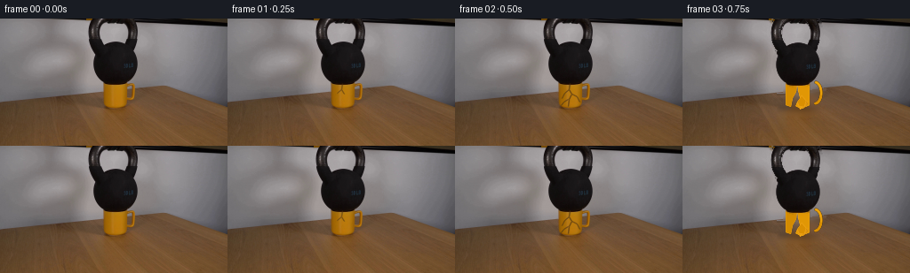
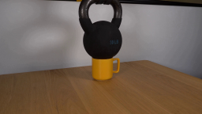
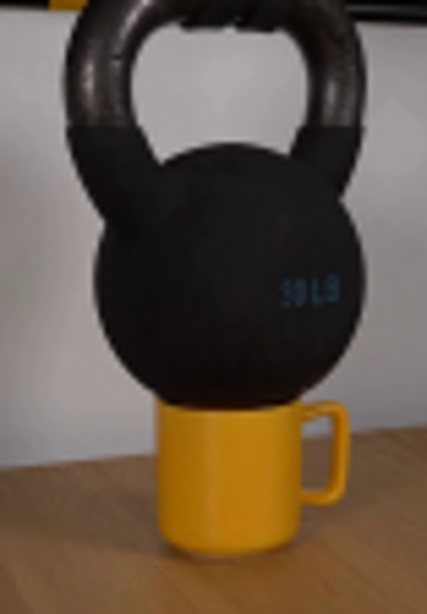
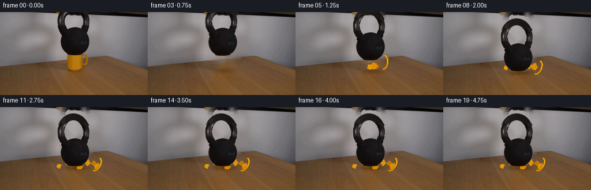
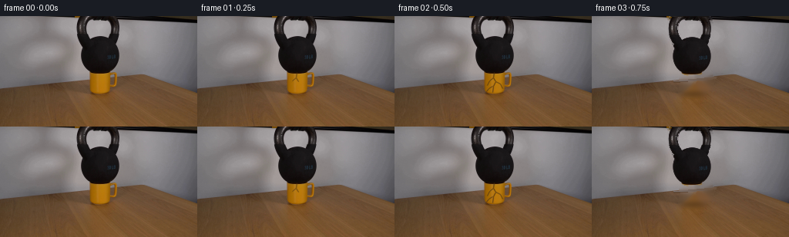
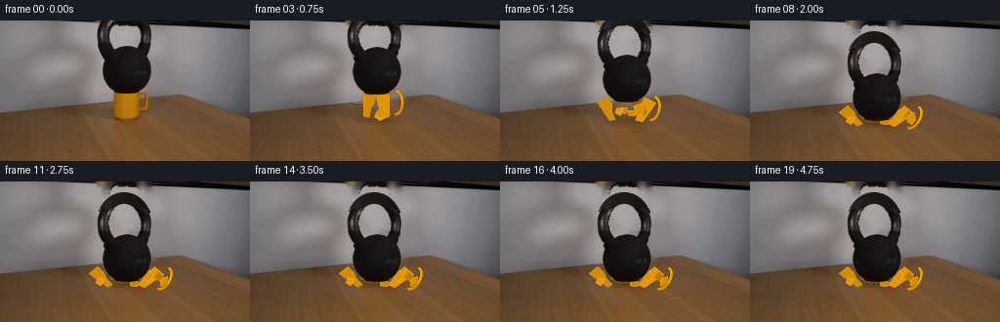

CODING AGENTS AS PIXEL WORLD MODELS
traex/GPT-5.6-Sol · 0187
点击播放 · 原生 RGB 像素
逐轮保存的候选
回放视频、检查图与代码变化。
每份候选均可单独播放。实际图片检查记录在下方工具轨迹中。
候选 01播放与检查图
点击播放 · 原生 RGB 像素

展开代码变化
--- 上一保存版本
+++ 本次保存版本
@@ -0,0 +1,242 @@
+from pathlib import Path
+import numpy as np
+import cv2
+from PIL import Image, ImageDraw
+import artifact_io
+
+CASE_DIR = Path(__file__).resolve().parent
+W, H = 256, 144
+
+
+def soft_mask(mask, sigma=0.65):
+ a = cv2.GaussianBlur(mask.astype(np.float32), (0, 0), sigma)
+ return np.clip(a, 0, 1)
+
+
+def over(dst, src, alpha):
+ a = alpha[..., None].astype(np.float32)
+ return np.clip(src.astype(np.float32) * a + dst.astype(np.float32) * (1-a), 0, 255).astype(np.uint8)
+
+
+def ellipse_mask(cx, cy, rx, ry):
+ yy, xx = np.mgrid[:H, :W]
+ return (((xx-cx)/rx)**2 + ((yy-cy)/ry)**2 <= 1).astype(np.uint8)
+
+
+def make_clean_plate(im):
+ # Mask just the physical objects. Telea continuation works particularly well
+ # here because the wall and the tabletop are broad, low-frequency surfaces.
+ m = np.zeros((H, W), np.uint8)
+ # Bell body, including its slightly squared shoulder and lower skirt.
+ cv2.ellipse(m, (130, 50), (28, 27), 0, 0, 360, 255, -1)
+ cv2.rectangle(m, (110, 31), (150, 63), 255, -1)
+ # Handle is an annulus, not a filled hole.
+ outer = np.zeros_like(m)
+ inner = np.zeros_like(m)
+ cv2.ellipse(outer, (127, 14), (29, 31), 0, 0, 360, 255, -1)
+ cv2.ellipse(inner, (127, 14), (16, 19), 0, 0, 360, 255, -1)
+ m = cv2.max(m, cv2.subtract(outer, inner))
+ # Yellow cup and handle.
+ cv2.rectangle(m, (114, 68), (145, 103), 255, -1)
+ cv2.ellipse(m, (130, 99), (17, 6), 0, 0, 360, 255, -1)
+ cv2.rectangle(m, (141, 73), (154, 94), 255, -1)
+ cv2.ellipse(m, (149, 83), (7, 12), 0, 0, 360, 255, 2)
+ m = cv2.dilate(m, np.ones((3, 3), np.uint8), iterations=1)
+ plate = cv2.inpaint(cv2.cvtColor(im, cv2.COLOR_RGB2BGR), m, 6, cv2.INPAINT_TELEA)
+ plate = cv2.cvtColor(plate, cv2.COLOR_BGR2RGB)
+
+ # Inpainting across the wall/table boundary can leave a tiny wavering seam.
+ # Restore a crisp, perspective-correct back edge behind the former cup.
+ # This strip is normally hidden by the falling bell, but matters during gaps.
+ for x in range(106, 162):
+ horizon = int(round(83.2 - 0.095*(x-128)))
+ # only correct a 2 px seam, with colors sampled just outside the object
+ for y in range(horizon-1, horizon+2):
+ left = im[y, 92].astype(float)
+ right = im[y, 173].astype(float)
+ t = (x-92)/(173-92)
+ plate[y, x] = np.clip(left*(1-t)+right*t, 0, 255)
+ return plate
+
+
+def make_kettle_sprite(im):
+ gray = cv2.cvtColor(im, cv2.COLOR_RGB2GRAY).astype(np.float32)
+ yy, xx = np.mgrid[:H, :W]
+ body_geo = (((xx-130)/28.3)**2 + ((yy-50)/27.0)**2 <= 1)
+ body_geo |= ((xx >= 109) & (xx <= 151) & (yy >= 31) & (yy <= 58))
+ outer = ((xx-127)/28.4)**2 + ((yy-14)/31.0)**2 <= 1
+ inner = ((xx-127)/16.1)**2 + ((yy-14)/18.8)**2 < 1
+ ring_geo = outer & ~inner
+ geo = body_geo | ring_geo
+ # Black cast iron is clearly separated from the light wall and yellow mug.
+ # Preserve antialiasing at its actual boundary.
+ a = np.clip((132-gray)/47.0, 0, 1) * geo
+ a[geo & (gray < 77)] = 1
+ # Exclude the unrelated black strip along the very top-right edge.
+ a[(yy < 4) & (xx > 153)] = 0
+ a = soft_mask(a, .45)
+ return im.copy(), a
+
+
+def full_handle_layer(dy):
+ """Complete the small part of the handle that was outside frame zero."""
+ S = 4
+ layer = np.zeros((H*S, W*S, 3), np.uint8)
+ alpha = np.zeros((H*S, W*S), np.uint8)
+ # At frame zero the top of this ellipse is outside the image. As the bell
+ # drops, this render supplies its newly visible rounded crown.
+ c = (127*S, (14+dy)*S)
+ cv2.ellipse(alpha, c, (28*S, 31*S), 0, 0, 360, 255, -1, cv2.LINE_AA)
+ cv2.ellipse(alpha, c, (16*S, 19*S), 0, 0, 360, 0, -1, cv2.LINE_AA)
+ # Warm black iron with a left rim highlight, matching the source lighting.
+ yy, xx = np.mgrid[:H*S, :W*S]
+ base = 19 + 8*np.clip(1-(xx/S-111)/32, 0, 1)
+ layer[..., 0] = np.clip(base+5, 0, 255)
+ layer[..., 1] = np.clip(base+2, 0, 255)
+ layer[..., 2] = np.clip(base, 0, 255)
+ hi = np.zeros_like(alpha)
+ cv2.ellipse(hi, c, (23*S, 27*S), 0, 128, 230, 105, 3*S, cv2.LINE_AA)
+ light = cv2.GaussianBlur(hi, (0,0), 1.2*S)/255.0
+ layer = np.clip(layer.astype(float) + light[...,None]*30, 0, 255).astype(np.uint8)
+ layer = cv2.resize(layer, (W,H), interpolation=cv2.INTER_AREA)
+ alpha = cv2.resize(alpha, (W,H), interpolation=cv2.INTER_AREA).astype(float)/255
+ # Only rows newly exposed by the shift are needed; the photographed handle
+ # is composited over this layer everywhere else.
+ return layer, alpha
+
+
+def add_shadow(frame, cx, cy, rx, ry, strength):
+ yy, xx = np.mgrid[:H, :W]
+ q = ((xx-cx)/rx)**2 + ((yy-cy)/ry)**2
+ a = np.exp(-q*2.1) * strength
+ # Shadows on wood are neutral-warm and multiply the existing grain.
+ out = frame.astype(float)
+ out *= (1-a[...,None])
+ return np.clip(out,0,255).astype(np.uint8)
+
+
+def draw_cracks(frame, amount):
+ # Hairline branching cracks on the front wall of the mug. Supersampling is
+ # unnecessary at this scale; low opacity keeps them photographic.
+ if amount <= 0: return frame
+ overlay = frame.copy()
+ paths = [
+ [(129,73),(128,80),(131,85),(128,91),(127,99)],
+ [(128,80),(123,84),(120,90)],
+ [(131,85),(137,88),(140,94)],
+ [(127,91),(122,94),(119,98)],
+ [(137,88),(142,85),(145,84)],
+ ]
+ n = max(1, int(np.ceil(amount*len(paths))))
+ for j,p in enumerate(paths[:n]):
+ end = max(2, int(1+(len(p)-1)*min(1, amount*2.2-j*.08)))
+ col = (84,55,19) if j else (70,45,17)
+ cv2.polylines(overlay, [np.array(p[:end],np.int32)], False, col, 1, cv2.LINE_AA)
+ a = .42 + .34*amount
+ return cv2.addWeighted(overlay,a,frame,1-a,0)
+
+
+def poly_layer(polys):
+ S=4
+ rgb=np.zeros((H*S,W*S,3),np.uint8)
+ a=np.zeros((H*S,W*S),np.uint8)
+ for pts, color in polys:
+ p=np.array([(int(x*S),int(y*S)) for x,y in pts],np.int32)
+ cv2.fillConvexPoly(rgb,p,color,cv2.LINE_AA)
+ cv2.fillConvexPoly(a,p,255,cv2.LINE_AA)
+ # pale ceramic fracture edge and dark contact edge
+ cv2.polylines(rgb,[p],True,tuple(min(255,c+18) for c in color),max(2,S//2),cv2.LINE_AA)
+ return cv2.resize(rgb,(W,H),interpolation=cv2.INTER_AREA), cv2.resize(a,(W,H),interpolation=cv2.INTER_AREA)/255
+
+
+def shards_for_frame(i):
+ if i < 4: return []
+ # Each piece follows a short ballistic path and then remains on the table.
+ pieces = [
+ ([(0,0),(10,1),(7,8),(1,6)], (201,132,3), (-18, 1), (-0.75,0.12)),
+ ([(0,0),(8,-2),(10,5),(3,9)], (221,148,4), (17, 1), (0.82,0.09)),
+ ([(0,0),(6,-5),(12,2),(8,7)], (190,119,2), (28, 4), (1.20,0.18)),
+ ([(0,0),(7,0),(4,8),(-2,5)], (227,153,7), (-29, 5), (-1.12,0.22)),
+ ([(0,0),(12,-1),(9,5),(2,6)], (211,137,1), (4, 7), (0.18,0.25)),
+ ([(0,0),(5,-7),(10,-1),(8,6),(2,5)], (218,143,2), (35, 7), (1.35,0.28)),
+ ]
+ t = i-4
+ out=[]
+ for k,(shape,(r,g,b),(dx,dy),(vx,vy)) in enumerate(pieces):
+ tt=max(0,t-k*.18)
+ prog=min(1,tt/4.5)
+ x=129 + dx*prog
+ # brief upward kick, then settle along the tabletop perspective
+ y=94 + dy*prog - (5+2*(k%2))*np.sin(np.pi*prog)
+ ang=(k-2.5)*0.18*prog
+ ca,sa=np.cos(ang),np.sin(ang)
+ pts=[]
+ for px,py in shape:
+ pts.append((x+px*ca-py*sa,y+px*sa+py*ca))
+ out.append((pts,(r,g,b)))
+ return out
+
+
+def handle_fragment(i):
+ if i < 4: return None
+ t=min(1,(i-4)/5)
+ # The mug handle snaps as one recognisable C-shaped piece and tips right.
+ S=4
+ rgb=np.zeros((H*S,W*S,3),np.uint8); a=np.zeros((H*S,W*S),np.uint8)
+ cx=(149+18*t); cy=(84+15*t)
+ ang=28*t
+ center=(int(cx*S),int(cy*S)); axes=(int(7*S),int(12*S))
+ cv2.ellipse(a,center,axes,ang,-83,86,255,3*S,cv2.LINE_AA)
+ cv2.ellipse(rgb,center,axes,ang,-83,86,(217,143,2),3*S,cv2.LINE_AA)
+ cv2.ellipse(rgb,center,axes,ang,-83,10,(240,169,14),1*S,cv2.LINE_AA)
+ return cv2.resize(rgb,(W,H),interpolation=cv2.INTER_AREA),cv2.resize(a,(W,H),interpolation=cv2.INTER_AREA)/255
+
+
+def compose_kettle(frame, sprite, alpha, dy):
+ # Render missing crown first.
+ h_rgb,h_a=full_handle_layer(dy)
+ # Crown layer is clipped to the upper newly revealed zone to avoid replacing
+ # source texture on the lower handle/body.
+ crown_clip=np.zeros((H,W),float)
+ crown_clip[:max(0,dy+3)] = 1
+ frame=over(frame,h_rgb,h_a*crown_clip)
+ M=np.float32([[1,0,0],[0,1,dy]])
+ spr=cv2.warpAffine(sprite,M,(W,H),flags=cv2.INTER_LINEAR,borderMode=cv2.BORDER_CONSTANT,borderValue=(0,0,0))
+ aa=cv2.warpAffine(alpha.astype(np.float32),M,(W,H),flags=cv2.INTER_LINEAR,borderMode=cv2.BORDER_CONSTANT,borderValue=0)
+ return over(frame,spr,aa)
+
+
+def generate():
+ im=np.array(Image.open(CASE_DIR/'first_frame.png').convert('RGB'),dtype=np.uint8)
+ assert im.shape==(H,W,3)
+ plate=make_clean_plate(im)
+ sprite,kalpha=make_kettle_sprite(im)
+ frames=[]
+ # Contact remains still for half a second, then brittle fracture and a fast
+ # 27 px fall. A one-frame compression/rebound sells the 30 lb impact.
+ drops=[0,0,0,1,4,9,16,23,28,30,27,28,28,28,28,28,28,28,28,28]
+ for i,dy in enumerate(drops):
+ if i==0:
+ frames.append(im.copy()); continue
+ if i<=2:
+ f=draw_cracks(im.copy(),0.33 if i==1 else 0.72)
+ frames.append(f); continue
+ f=plate.copy()
+ # projected contact shadow strengthens as the weight reaches the table
+ f=add_shadow(f,130+dy*.05,101+min(dy,28)*.12,32+dy*.20,7.0,0.18+0.004*dy)
+ # broken ceramics go under the iron body but remain visible at its sides
+ polys=shards_for_frame(i)
+ if polys:
+ pr,pa=poly_layer(polys); f=over(f,pr,pa)
+ hf=handle_fragment(i)
+ if hf: f=over(f,hf[0],hf[1])
+ f=compose_kettle(f,sprite,kalpha,dy)
+ frames.append(f)
+ frames=np.stack(frames).astype(np.uint8)
+ # Contract-critical guarantee.
+ frames[0]=im
+ artifact_io.save(frames,CASE_DIR)
+
+
+if __name__=='__main__':
+ generate()
候选 02播放与检查图
点击播放 · 原生 RGB 像素


展开代码变化
--- 上一保存版本
+++ 本次保存版本
@@ -41,6 +41,9 @@
cv2.ellipse(m, (130, 99), (17, 6), 0, 0, 360, 255, -1)
cv2.rectangle(m, (141, 73), (154, 94), 255, -1)
cv2.ellipse(m, (149, 83), (7, 12), 0, 0, 360, 255, 2)
+ # Include the cup's soft contact shadow so it cannot remain after the cup
+ # has burst outward.
+ cv2.ellipse(m, (130, 103), (23, 6), 0, 0, 360, 255, -1)
m = cv2.dilate(m, np.ones((3, 3), np.uint8), iterations=1)
plate = cv2.inpaint(cv2.cvtColor(im, cv2.COLOR_RGB2BGR), m, 6, cv2.INPAINT_TELEA)
plate = cv2.cvtColor(plate, cv2.COLOR_BGR2RGB)
@@ -150,7 +153,7 @@
def shards_for_frame(i):
- if i < 4: return []
+ if i < 3: return []
# Each piece follows a short ballistic path and then remains on the table.
pieces = [
([(0,0),(10,1),(7,8),(1,6)], (201,132,3), (-18, 1), (-0.75,0.12)),
@@ -160,7 +163,7 @@
([(0,0),(12,-1),(9,5),(2,6)], (211,137,1), (4, 7), (0.18,0.25)),
([(0,0),(5,-7),(10,-1),(8,6),(2,5)], (218,143,2), (35, 7), (1.35,0.28)),
]
- t = i-4
+ t = i-3
out=[]
for k,(shape,(r,g,b),(dx,dy),(vx,vy)) in enumerate(pieces):
tt=max(0,t-k*.18)
@@ -177,9 +180,44 @@
return out
+def large_fragments_for_frame(i):
+ """Two recognizable pieces of the cylindrical cup wall.
+
+ Keeping these broad curved-yellow silhouettes is important: without them a
+ brittle failure reads as an object simply disappearing rather than ceramic
+ breaking under load.
+ """
+ if i < 3:
+ return []
+ u = min(1.0, (i-3)/5.0)
+ # ease-out gives an impulsive sideways expulsion followed by a quick settle
+ e = 1-(1-u)**2
+ source = [
+ ([(116,72),(129,73),(128,83),(124,90),(122,100),(116,98)],
+ (211,139,2), (-17,12), -48),
+ ([(129,73),(143,72),(143,98),(136,101),(132,90),(130,82)],
+ (225,151,5), (17,12), 50),
+ ]
+ out=[]
+ for k,(pts,col,(dx,dy),target_ang) in enumerate(source):
+ p=np.asarray(pts,float)
+ center=p.mean(axis=0)
+ ang=np.deg2rad(target_ang*e)
+ ca,sa=np.cos(ang),np.sin(ang)
+ q=p-center
+ q=np.c_[q[:,0]*ca-q[:,1]*sa, q[:,0]*sa+q[:,1]*ca]
+ # Flatten a little as the curved wall piece hits the table.
+ q[:,1] *= 1-.18*e
+ q += center + np.array([dx*e,dy*e])
+ # a tiny opposing bounce at mid-flight
+ q[:,1] -= (3.0-k*.5)*np.sin(np.pi*u)
+ out.append(([tuple(v) for v in q],col))
+ return out
+
+
def handle_fragment(i):
- if i < 4: return None
- t=min(1,(i-4)/5)
+ if i < 3: return None
+ t=min(1,(i-3)/5)
# The mug handle snaps as one recognisable C-shaped piece and tips right.
S=4
rgb=np.zeros((H*S,W*S,3),np.uint8); a=np.zeros((H*S,W*S),np.uint8)
@@ -225,7 +263,7 @@
# projected contact shadow strengthens as the weight reaches the table
f=add_shadow(f,130+dy*.05,101+min(dy,28)*.12,32+dy*.20,7.0,0.18+0.004*dy)
# broken ceramics go under the iron body but remain visible at its sides
- polys=shards_for_frame(i)
+ polys=large_fragments_for_frame(i) + shards_for_frame(i)
if polys:
pr,pa=poly_layer(polys); f=over(f,pr,pa)
hf=handle_fragment(i)
可观测工具轨迹
实际执行的命令与返回图片。
命令 1exit 0
/bin/bash -lc "cat prompt.txt && printf '\\n--- GENERATION RULES ---\\n' && cat GENERATION_RULES.md"
命令 2exit 1
/bin/bash -lc "find . -maxdepth 2 -type f -printf '%p\\n' | sort && printf '\\n--- tools ---\\n' && command -v ffmpeg && command -v python3 && python3 - <<'PY'
try:
import cv2; print('cv2',cv2.__version__)
except Exception as e: print('no cv2',e)
try:
from PIL import Image; print('PIL ok')
except Exception as e: print('no PIL',e)
PY"命令 3exit 0
/bin/bash -lc 'cat artifact_io.py'
命令 4exit 0
/bin/bash -lc "python3 - <<'PY' mods=['cv2','PIL','numpy','scipy','imageio','skimage'] for m in mods: try: x=__import__(m); print(m,'OK',getattr(x,'__version__','')) except Exception as e: print(m,'NO',repr(e)) PY command -v ffmpeg || true command -v convert || true command -v magick || true"
命令 5exit 0
/bin/bash -lc "python3 - <<'PY'
from PIL import Image
im=Image.open('first_frame.png')
im.crop((88,0,166,112)).resize((624,896)).save('.tmp/crop.png')
PY"命令 6exit 0
/bin/bash -lc "cat > generate.py <<'PY'
from pathlib import Path
import numpy as np
import cv2
from PIL import Image, ImageDraw
import artifact_io
CASE_DIR = Path(__file__).resolve().parent
W, H = 256, 144
def soft_mask(mask, sigma=0.65):
a = cv2.GaussianBlur(mask.astype(np.float32), (0, 0), sigma)
return np.clip(a, 0, 1)
def over(dst, src, alpha):
a = alpha[..., None].astype(np.float32)
return np.clip(src.astype(np.float32) * a + dst.astype(np.float32) * (1-a), 0, 255).astype(np.uint8)
def ellipse_mask(cx, cy, rx, ry):
yy, xx = np.mgrid[:H, :W]
return (((xx-cx)/rx)**2 + ((yy-cy)/ry)**2 <= 1).astype(np.uint8)
def make_clean_plate(im):
# Mask just the physical objects. Telea continuation works particularly well
# here because the wall and the tabletop are broad, low-frequency surfaces.
m = np.zeros((H, W), np.uint8)
# Bell body, including its slightly squared shoulder and lower skirt.
cv2.ellipse(m, (130, 50), (28, 27), 0, 0, 360, 255, -1)
cv2.rectangle(m, (110, 31), (150, 63), 255, -1)
# Handle is an annulus, not a filled hole.
outer = np.zeros_like(m)
inner = np.zeros_like(m)
cv2.ellipse(outer, (127, 14), (29, 31), 0, 0, 360, 255, -1)
cv2.ellipse(inner, (127, 14), (16, 19), 0, 0, 360, 255, -1)
m = cv2.max(m, cv2.subtract(outer, inner))
# Yellow cup and handle.
cv2.rectangle(m, (114, 68), (145, 103), 255, -1)
cv2.ellipse(m, (130, 99), (17, 6), 0, 0, 360, 255, -1)
cv2.rectangle(m, (141, 73), (154, 94), 255, -1)
cv2.ellipse(m, (149, 83), (7, 12), 0, 0, 360, 255, 2)
m = cv2.dilate(m, np.ones((3, 3), np.uint8), iterations=1)
plate = cv2.inpaint(cv2.cvtColor(im, cv2.COLOR_RGB2BGR), m, 6, cv2.INPAINT_TELEA)
plate = cv2.cvtColor(plate, cv2.COLOR_BGR2RGB)
# Inpainting across the wall/table boundary can leave a tiny wavering seam.
# Restore a crisp, perspective-correct back edge behind the former cup.
# This strip is normally hidden by the falling bell, but matters during gaps.
for x in range(106, 162):
horizon = int(round(83.2 - 0.095*(x-128)))
# only correct a 2 px seam, with colors sampled just outside the object
for y in range(horizon-1, horizon+2):
left = im[y, 92].astype(float)
right = im[y, 173].astype(float)
t = (x-92)/(173-92)
plate[y, x] = np.clip(left*(1-t)+right*t, 0, 255)
return plate
def make_kettle_sprite(im):
gray = cv2.cvtColor(im, cv2.COLOR_RGB2GRAY).astype(np.float32)
yy, xx = np.mgrid[:H, :W]
body_geo = (((xx-130)/28.3)**2 + ((yy-50)/27.0)**2 <= 1)
body_geo |= ((xx >= 109) & (xx <= 151) & (yy >= 31) & (yy <= 58))
outer = ((xx-127)/28.4)**2 + ((yy-14)/31.0)**2 <= 1
inner = ((xx-127)/16.1)**2 + ((yy-14)/18.8)**2 < 1
ring_geo = outer & ~inner
geo = body_geo | ring_geo
# Black cast iron is clearly separated from the light wall and yellow mug.
# Preserve antialiasing at its actual boundary.
a = np.clip((132-gray)/47.0, 0, 1) * geo
a[geo & (gray < 77)] = 1
# Exclude the unrelated black strip along the very top-right edge.
a[(yy < 4) & (xx > 153)] = 0
a = soft_mask(a, .45)
return im.copy(), a
def full_handle_layer(dy):
\"\"\"Complete the small part of the handle that was outside frame zero.\"\"\"
S = 4
layer = np.zeros((H*S, W*S, 3), np.uint8)
alpha = np.zeros((H*S, W*S), np.uint8)
# At frame zero the top of this ellipse is outside the image. As the bell
# drops, this render supplies its newly visible rounded crown.
c = (127*S, (14+dy)*S)
cv2.ellipse(alpha, c, (28*S, 31*S), 0, 0, 360, 255, -1, cv2.LINE_AA)
cv2.ellipse(alpha, c, (16*S, 19*S), 0, 0, 360, 0, -1, cv2.LINE_AA)
# Warm black iron with a left rim highlight, matching the source lighting.
yy, xx = np.mgrid[:H*S, :W*S]
base = 19 + 8*np.clip(1-(xx/S-111)/32, 0, 1)
layer[..., 0] = np.clip(base+5, 0, 255)
layer[..., 1] = np.clip(base+2, 0, 255)
layer[..., 2] = np.clip(base, 0, 255)
hi = np.zeros_like(alpha)
cv2.ellipse(hi, c, (23*S, 27*S), 0, 128, 230, 105, 3*S, cv2.LINE_AA)
light = cv2.GaussianBlur(hi, (0,0), 1.2*S)/255.0
layer = np.clip(layer.astype(float) + light[...,None]*30, 0, 255).astype(np.uint8)
layer = cv2.resize(layer, (W,H), interpolation=cv2.INTER_AREA)
alpha = cv2.resize(alpha, (W,H), interpolation=cv2.INTER_AREA).astype(float)/255
# Only rows newly exposed by the shift are needed; the photographed handle
# is composited over this layer everywhere else.
return layer, alpha
def add_shadow(frame, cx, cy, rx, ry, strength):
yy, xx = np.mgrid[:H, :W]
q = ((xx-cx)/rx)**2 + ((yy-cy)/ry)**2
a = np.exp(-q*2.1) * strength
# Shadows on wood are neutral-warm and multiply the existing grain.
out = frame.astype(float)
out *= (1-a[...,None])
return np.clip(out,0,255).astype(np.uint8)
def draw_cracks(frame, amount):
# Hairline branching cracks on the front wall of the mug. Supersampling is
# unnecessary at this scale; low opacity keeps them photographic.
if amount <= 0: return frame
overlay = frame.copy()
paths = [
[(129,73),(128,80),(131,85),(128,91),(127,99)],
[(128,80),(123,84),(120,90)],
[(131,85),(137,88),(140,94)],
[(127,91),(122,94),(119,98)],
[(137,88),(142,85),(145,84)],
]
n = max(1, int(np.ceil(amount*len(paths))))
for j,p in enumerate(paths[:n]):
end = max(2, int(1+(len(p)-1)*min(1, amount*2.2-j*.08)))
col = (84,55,19) if j else (70,45,17)
cv2.polylines(overlay, [np.array(p[:end],np.int32)], False, col, 1, cv2.LINE_AA)
a = .42 + .34*amount
return cv2.addWeighted(overlay,a,frame,1-a,0)
def poly_layer(polys):
S=4
rgb=np.zeros((H*S,W*S,3),np.uint8)
a=np.zeros((H*S,W*S),np.uint8)
for pts, color in polys:
p=np.array([(int(x*S),int(y*S)) for x,y in pts],np.int32)
cv2.fillConvexPoly(rgb,p,color,cv2.LINE_AA)
cv2.fillConvexPoly(a,p,255,cv2.LINE_AA)
# pale ceramic fracture edge and dark contact edge
cv2.polylines(rgb,[p],True,tuple(min(255,c+18) for c in color),max(2,S//2),cv2.LINE_AA)
return cv2.resize(rgb,(W,H),interpolation=cv2.INTER_AREA), cv2.resize(a,(W,H),interpolation=cv2.INTER_AREA)/255
def shards_for_frame(i):
if i < 4: return []
# Each piece follows a short ballistic path and then remains on the table.
pieces = [
([(0,0),(10,1),(7,8),(1,6)], (201,132,3), (-18, 1), (-0.75,0.12)),
([(0,0),(8,-2),(10,5),(3,9)], (221,148,4), (17, 1), (0.82,0.09)),
([(0,0),(6,-5),(12,2),(8,7)], (190,119,2), (28, 4), (1.20,0.18)),
([(0,0),(7,0),(4,8),(-2,5)], (227,153,7), (-29, 5), (-1.12,0.22)),
([(0,0),(12,-1),(9,5),(2,6)], (211,137,1), (4, 7), (0.18,0.25)),
([(0,0),(5,-7),(10,-1),(8,6),(2,5)], (218,143,2), (35, 7), (1.35,0.28)),
]
t = i-4
out=[]
for k,(shape,(r,g,b),(dx,dy),(vx,vy)) in enumerate(pieces):
tt=max(0,t-k*.18)
prog=min(1,tt/4.5)
x=129 + dx*prog
# brief upward kick, then settle along the tabletop perspective
y=94 + dy*prog - (5+2*(k%2))*np.sin(np.pi*prog)
ang=(k-2.5)*0.18*prog
ca,sa=np.cos(ang),np.sin(ang)
pts=[]
for px,py in shape:
pts.append((x+px*ca-py*sa,y+px*sa+py*ca))
out.append((pts,(r,g,b)))
return out
def handle_fragment(i):
if i < 4: return None
t=min(1,(i-4)/5)
# The mug handle snaps as one recognisable C-shaped piece and tips right.
S=4
rgb=np.zeros((H*S,W*S,3),np.uint8); a=np.zeros((H*S,W*S),np.uint8)
cx=(149+18*t); cy=(84+15*t)
ang=28*t
center=(int(cx*S),int(cy*S)); axes=(int(7*S),int(12*S))
cv2.ellipse(a,center,axes,ang,-83,86,255,3*S,cv2.LINE_AA)
cv2.ellipse(rgb,center,axes,ang,-83,86,(217,143,2),3*S,cv2.LINE_AA)
cv2.ellipse(rgb,center,axes,ang,-83,10,(240,169,14),1*S,cv2.LINE_AA)
return cv2.resize(rgb,(W,H),interpolation=cv2.INTER_AREA),cv2.resize(a,(W,H),interpolation=cv2.INTER_AREA)/255
def compose_kettle(frame, sprite, alpha, dy):
# Render missing crown first.
h_rgb,h_a=full_handle_layer(dy)
# Crown layer is clipped to the upper newly revealed zone to avoid replacing
# source texture on the lower handle/body.
crown_clip=np.zeros((H,W),float)
crown_clip[:max(0,dy+3)] = 1
frame=over(frame,h_rgb,h_a*crown_clip)
M=np.float32([[1,0,0],[0,1,dy]])
spr=cv2.warpAffine(sprite,M,(W,H),flags=cv2.INTER_LINEAR,borderMode=cv2.BORDER_CONSTANT,borderValue=(0,0,0))
aa=cv2.warpAffine(alpha.astype(np.float32),M,(W,H),flags=cv2.INTER_LINEAR,borderMode=cv2.BORDER_CONSTANT,borderValue=0)
return over(frame,spr,aa)
def generate():
im=np.array(Image.open(CASE_DIR/'first_frame.png').convert('RGB'),dtype=np.uint8)
assert im.shape==(H,W,3)
plate=make_clean_plate(im)
sprite,kalpha=make_kettle_sprite(im)
frames=[]
# Contact remains still for half a second, then brittle fracture and a fast
# 27 px fall. A one-frame compression/rebound sells the 30 lb impact.
drops=[0,0,0,1,4,9,16,23,28,30,27,28,28,28,28,28,28,28,28,28]
for i,dy in enumerate(drops):
if i==0:
frames.append(im.copy()); continue
if i<=2:
f=draw_cracks(im.copy(),0.33 if i==1 else 0.72)
frames.append(f); continue
f=plate.copy()
# projected contact shadow strengthens as the weight reaches the table
f=add_shadow(f,130+dy*.05,101+min(dy,28)*.12,32+dy*.20,7.0,0.18+0.004*dy)
# broken ceramics go under the iron body but remain visible at its sides
polys=shards_for_frame(i)
if polys:
pr,pa=poly_layer(polys); f=over(f,pr,pa)
hf=handle_fragment(i)
if hf: f=over(f,hf[0],hf[1])
f=compose_kettle(f,sprite,kalpha,dy)
frames.append(f)
frames=np.stack(frames).astype(np.uint8)
# Contract-critical guarantee.
frames[0]=im
artifact_io.save(frames,CASE_DIR)
if __name__=='__main__':
generate()
PY
python3 generate.py
python3 - <<'PY'
from pathlib import Path
import numpy as np
from PIL import Image
z=np.load('pixels.npz')['pixels']
im=np.array(Image.open('first_frame.png').convert('RGB'))
p=z.transpose(2,0,1)
rgb=np.stack([(p>>16)&255,(p>>8)&255,p&255],axis=-1).astype(np.uint8)
print('pixels',rgb.shape,rgb.dtype,'frame0_equal',np.array_equal(rgb[0],im),'files',len(list(Path('frames').glob('*.png'))))
print('changed pixels:',[int(np.any(rgb[j]"'!=rgb[j-1],axis=2).sum()) for j in range(1,20)])
PY'命令 7exit 0
/bin/bash -lc "python3 generate.py
python3 - <<'PY'
from pathlib import Path
import numpy as np
from PIL import Image
z=np.load('pixels.npz')['pixels']; p=z.transpose(2,0,1)
rgb=np.stack([(p>>16)&255,(p>>8)&255,p&255],axis=-1).astype(np.uint8)
im=np.asarray(Image.open('first_frame.png').convert('RGB'))
assert rgb.shape==(20,144,256,3) and rgb.dtype==np.uint8
assert np.array_equal(rgb[0],im)
assert len(list(Path('frames').glob('*.png')))==20
print('validated:',rgb.shape,rgb.dtype,'frame00 exact; static tail exact:',all(np.array_equal(rgb[j],rgb[11]) for j in range(11,20)))
PY"视觉工具实际返回图片 1

视觉工具实际返回图片 2

视觉工具实际返回图片 3

视觉工具实际返回图片 4

视觉工具实际返回图片 5

保存候选 2 份；完成命令 7 次；可验证图片返回 5 张。原始 API 响应与完整日志保留在本地。